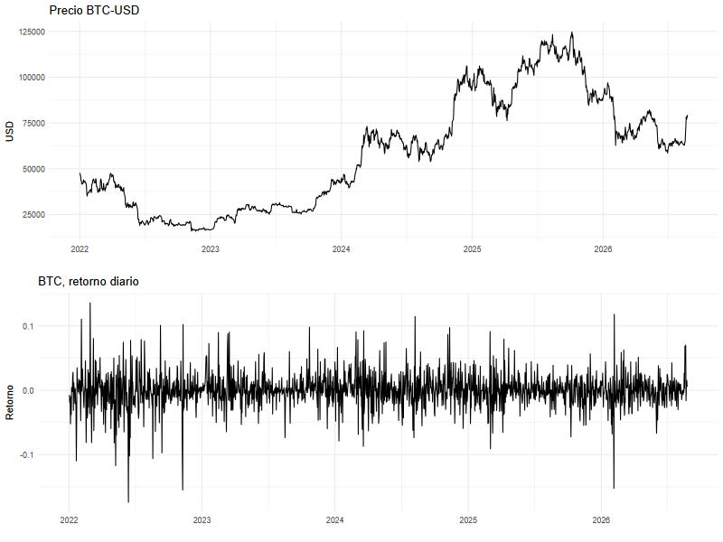
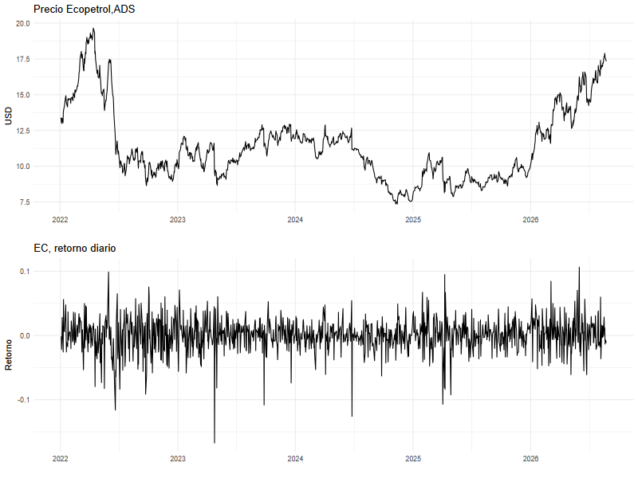
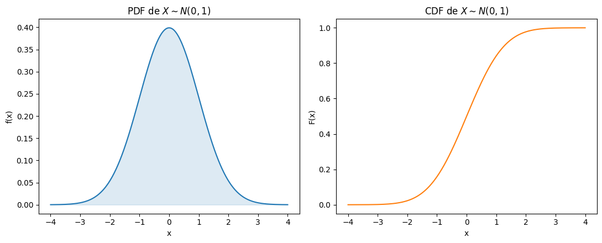

1. Introducción
El análisis de series de tiempo financieras tiene que ver con la valoración de activos a lo largo del tiempo. Si bien es una disciplina empírica, el análisis siempre está moldeado por la teoría. Un aspecto central del análisis de series de tiempo financiera es la incertidumbre. No solamente porque no conocemos el futuro, sino también porque nuestro conocimiento es, por definición, incompleto.
2. Retorno de los activos
Solemos trabajhar con el retorno y no con el precio de los activos. En primer lugar, porque el retorno es una medida sin escala y de fácil comparación entre activos. Segundo, y muy importante para este curso, porque los retornos tienen propiedades estadísticas más amigables que los precios. Las figuras siguientes muestran el comportamiento temporal de dos activos: bitcoin y la acción de Ecopetrol (ADS)


El retorno a un periodo se define como
\[1+R_t=\dfrac{P_t}{P_{t-1}}\]y el retorno neto como
\[R_t=\dfrac{P_t}{P_{t-1}}-1\]El retorno multiperiodo, es decir el que se obtiene por mantener el activo durante k periodos es
\[\prod_{j=0}^{k-1}(1+R_{t-j})\]que no es otra cosa que el retorno compuesto. Ahora, el retorno neto k periodos es
\[R_t[k]=\dfrac{P_{t}}{P_{t-k}}-1\]y el retorno neto anualizado, CAGR, siendo k el número de años
\[CAGR=\Big[\prod_{j=0}^{k-1}(1+R_{t-j})\Big]^{1/k}\]que no es otra cosa que
\[CAGR=\Big(\dfrac{P_t}{P_{t-k}}\Big)^{1/k}-1\]También lo podemos expresar de la siguiente manera
\[CAGR=exp\Big[k^{-1}\sum_{j=0}^{k-1}(1+R_j)\Big]-1\] Al logaritmo natural del retorno simple lo llamamos el retorno compuesto continuo o log return \[r_t=ln(1+R_t)=ln(P_t/P_{t-1})=p_t-p_{t-1}\] y para mútlples periodos \[r_t[k]=ln(1+R_t[k])=r_t+r_{t-1}+r_{t-2}+...+r_{t-k+1}\]3. Propiedades estadísticas
Los precios y los retornos los tratamos como variables aleatorias, lo que significa que los valores que observamos en los datos son la realización de un experimento. Es decir, que lo que observamos no es sino uno de los muchos resultados que pudimos obtener. Por eso, la variable aleatoria está caracterizada por una función de distribución
Una de las distribuciones más utilizadas es la normalUna variable aleatoria \(X\) es una función que asigna un valor numérico a cada resultado posible de un experimento aleatorio.
La función de distribución acumulada (CDF) de \(X\) se define como
\[ F(x) = P(X \le x) \]y da la probabilidad de que \(X\) tome un valor menor o igual a \(x\).
Si \(X\) es continua, la función de densidad de probabilidad (PDF) \(f(x)\) es tal que
\[ F(x) = \int_{-\infty}^{x} f(u)\, du, \qquad f(x) = \dfrac{dF(x)}{dx} \]
Se dice que \(X\) sigue una distribución normal con media \(\mu\) y varianza \(\sigma^2\), \(X \sim N(\mu, \sigma^2)\), si su función de densidad de probabilidad es
\[ f(x) = \dfrac{1}{\sigma\sqrt{2\pi}} \exp\left( -\dfrac{(x-\mu)^2}{2\sigma^2} \right), \qquad x \in \mathbb{R} \]Cuando \(\mu = 0\) y \(\sigma^2 = 1\) se conoce como distribución normal estándar.

Suponer que una variable aleatoria sigue una distribución normal es algo usual, sin embargo, como discutiremos más adelante, este supuesto no es siempre adecuado
Una variable aleatoria puede ser descrita por sus momentos. Decimos que el momento lth de \(X\) es
\[E(X^l)=\int_{-\infty}^{\infty}x^lf(x)dx\] El primer momento, \(l=1\), es la media. Si denotamos la media como \(\mu_x\), entonces el lth momento central es \[E(X-\mu_x)^l=\int_{-\infty}^{\infty}(x-\mu_x)^lf(x)dx\]El segundo momento central es la varianza, \(\sigma_x^2\), y el tercer y cuarto momento, normalizados, son la skewness (asimetría) y la curtosis. Para una distribución normal la asimetría es 0 y la curtosis es 3. Una discusión muy importante es si las variables financieras tienen o no exceso de curtosis, es decir curtosis>3. En este caso, decimos que la variable tiene colas gordas, lo que implica que los valores extremos ocurren con mayor frecuencia que en una distribución normal. Esto es fundamental para la gestión de riesgo
Referencias
- Tsay, R. S. (2010). Analysis of financial time series, third edition. Wiley.